29 Classic Halloween Movies to Watch for a Scary Evening In
From childhood classic like Halloweentown to cult favorites like Beetlejuice, we guarantee you'll find your favorites here.
Hocus Pocus (1993)
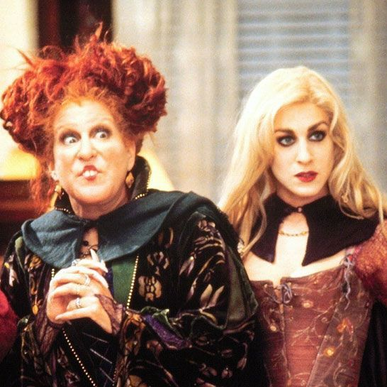
There's a reason this beloved film tops our list: This whimsical Disney classic makes chatty black cats and goofy witches the epitome of Halloween fun.
IT (2017)
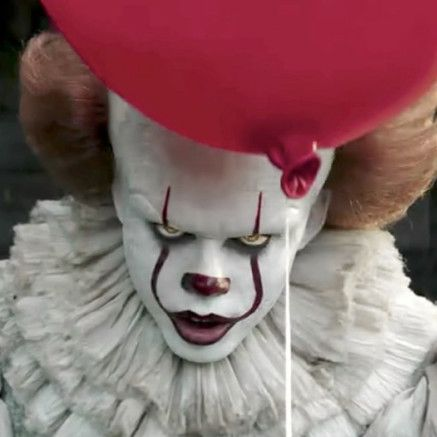
Since Pennywise the Clown is one of the most popular Halloween costumes, it's only fitting that the 2017 remake of Stephen King's bone-chilling story makes the cut.Since Pennywise the Clown is one of the most popular Halloween costumes, it's only fitting that the 2017 remake of Stephen King's bone-chilling story makes the cut.
Scream (1996)
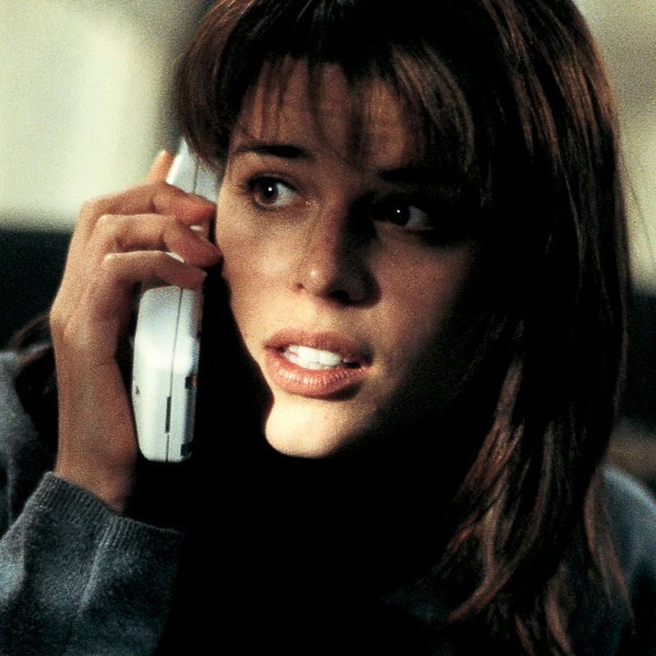
This clever classic reinvigorated the slasher genre with deadly wit. Watch to learn why you should never get too close to the man in the mask.
Carrie (1976)
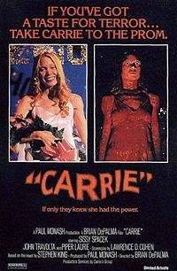
In this high school-turned-horror story, a young misfit (aptly named Carrie) shows her school bullies the terrible power that she possess. And let's just say, the bullying doesn't continue much longer.
The Addams Family (1991)
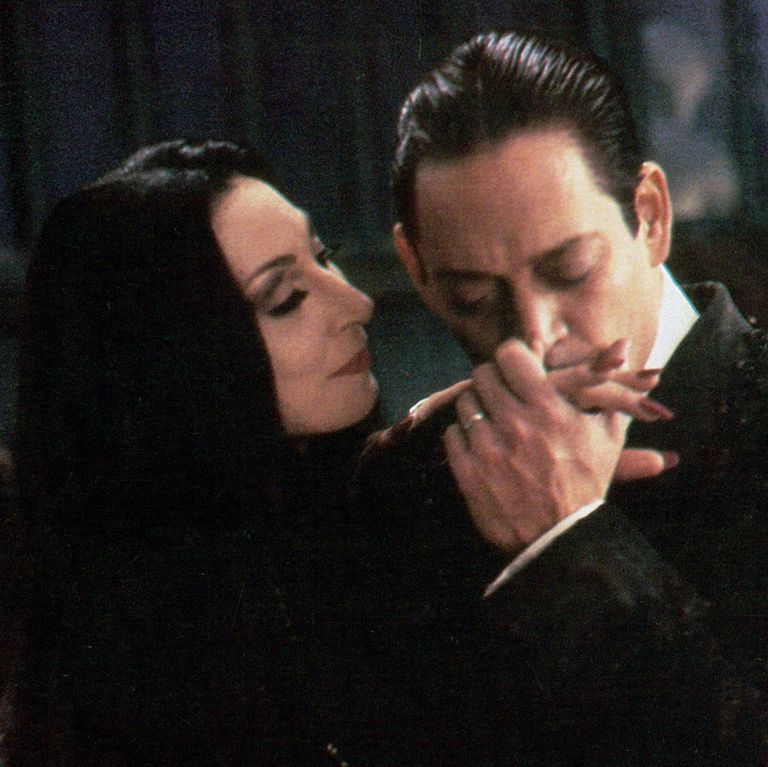
You might know the frightening faces of this wacky family — and probably the rhythm to their catchy theme song — but when's the last time you sang along? This kid-friendly classic is an easy choice for a spooky — but not nightmare-inducing — Halloween movie night.
The Sixth Sense (1999)
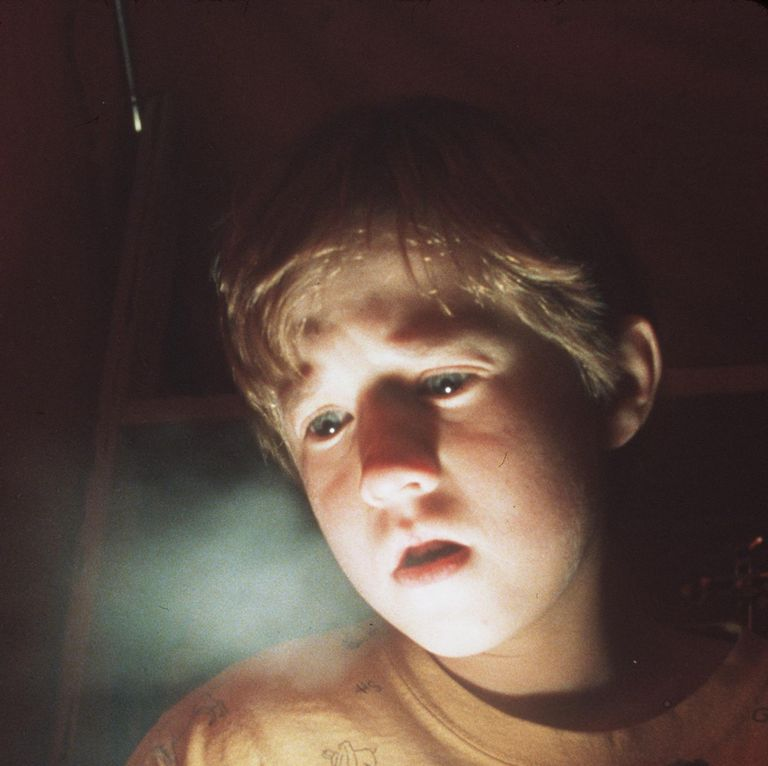
"I see dead people" is by far one of the most popular Halloween movie quotes to this day, and rightly so. In this paranormal drama, Haley Joel Osment plays a nine-year-old boy who, in fact, sees dead people. Need we say more?
Coraline (2009)
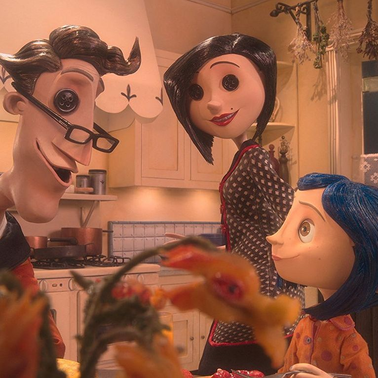
Follow young explorer Coraline through a door into an alternate dimension, where she meets characters who seem much like those in her real life ... but maybe a little off. Even though it's made for children, Coraline's creepy button eyes will make even adults a lil' unsettled.
Rosemary's Baby (1968)
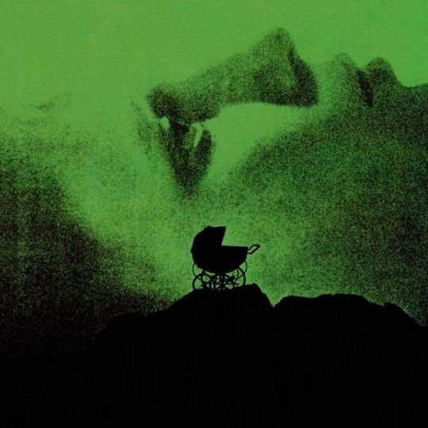
Mia Farrow is chilling as the pregnant young Rosemary, who must face the truth about the mysterious child she's carrying.
Get Out (2017)
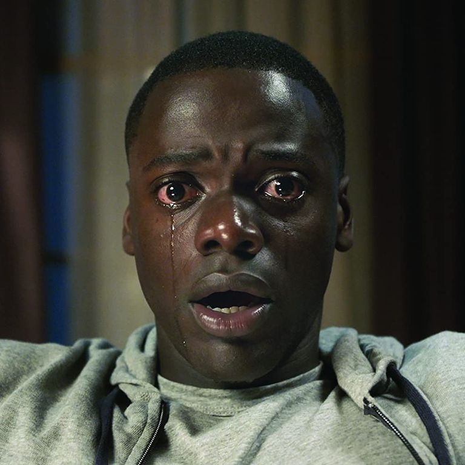
Jordan Peele's masterpiece, which uses white exploitation of Black people as a vehicle for supernatural horror, is an absolute must-see. You'll be thinking about this one long after you turn the lights out.
The Conjuring (2013)
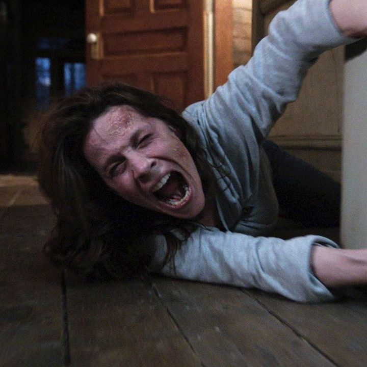
When paranormal investigators are called to search an isolated farmhouse, they think they can handle the less-than-horrifying hauntings there. But, if we know anything from the horror movies of yore, it's that spirits should never be underestimated.
Ghostbusters (1984)
Before your group dresses up in their best ghost-busting ensembles, take some inspiration from the comedy ensemble that started it all.
The Nightmare Before Christmas (1993)
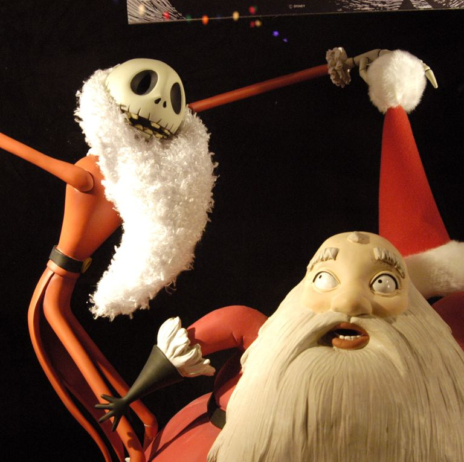
It's up for debate whether this classic falls into the Halloween or Christmas category. Either way, Tim Burton's imaginary world is a sheer delight.
Friday the 13th (1980)
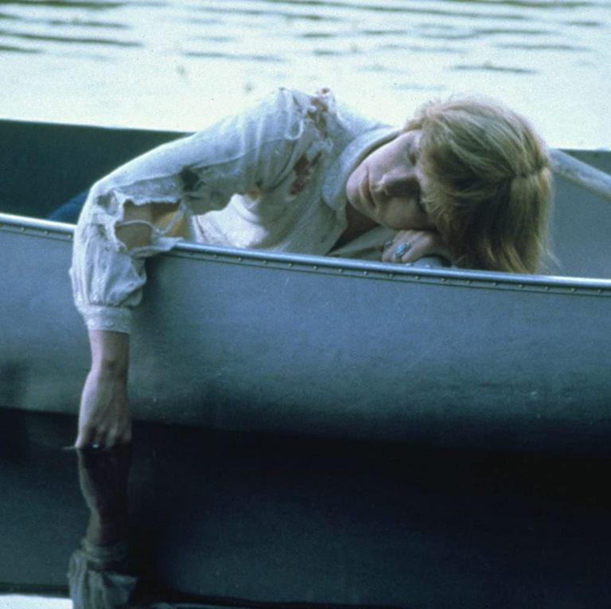
There's a reason so many of us are wary of Friday the 13th whenever it comes up on our calendars. We can owe a lot of that nervousness to this eerie fan-favorite.
Halloween (1978)
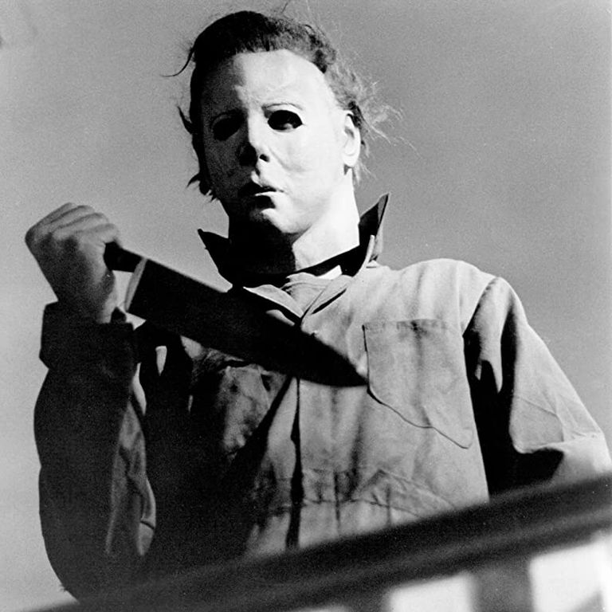
Given that this iconic film—featuring the love-to-hate slasher villain Michael Myers—shares a name with the year's spookiest holiday, is just about as classic as they come.
Halloween (2018)
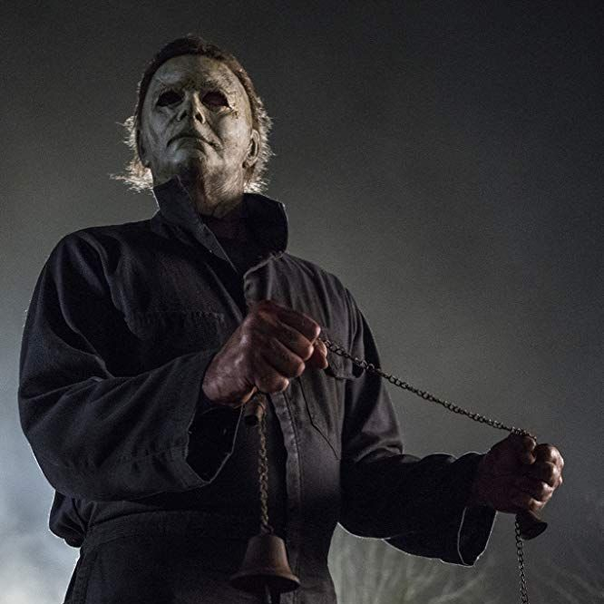
If you're looking for something a little more modern, this remake of the 1978 thriller gives the tried-and-true series a refresh with its original star, Jamie Lee Curtis.
The Amityville Horror (1979)
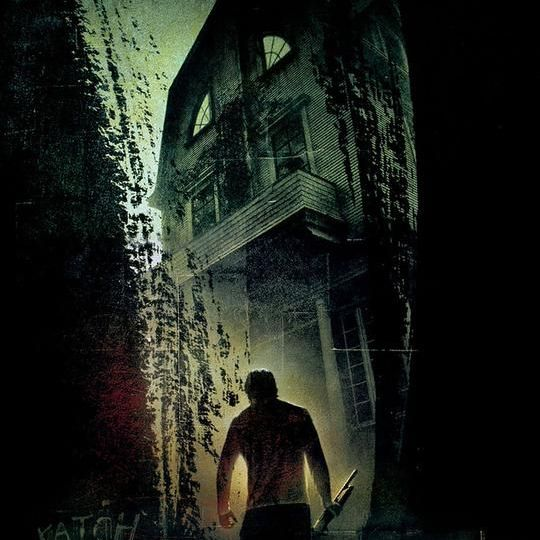
A couple moves into their dream home, only to discover the previous tenants met a deadly end. Really, this drama teaches an important life tip: If the house you’re buying seems too good to be true, call the ghostbusters before you settle in.
Practical Magic (1998)
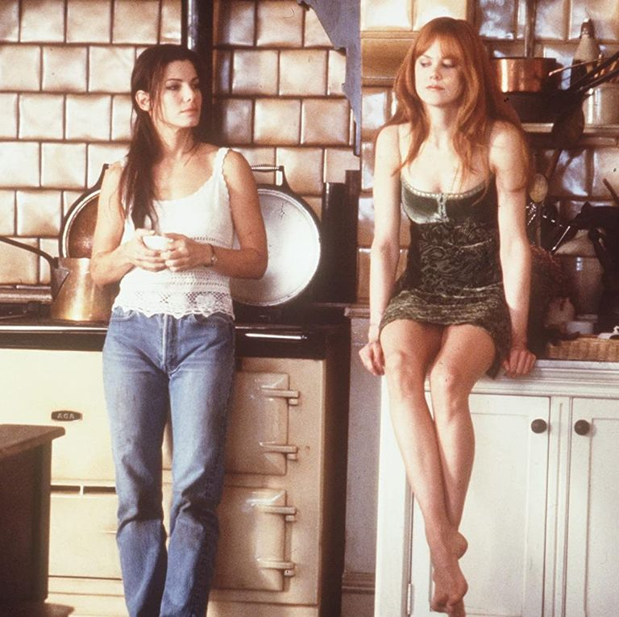
Nicole Kidman and Sandra Bullock as sibling witches?? Sign us up. This delightful cult-classic rom-com is a perfect pick for anyone who wants a slightly more low-key Halloween.
Child's Play (1988)
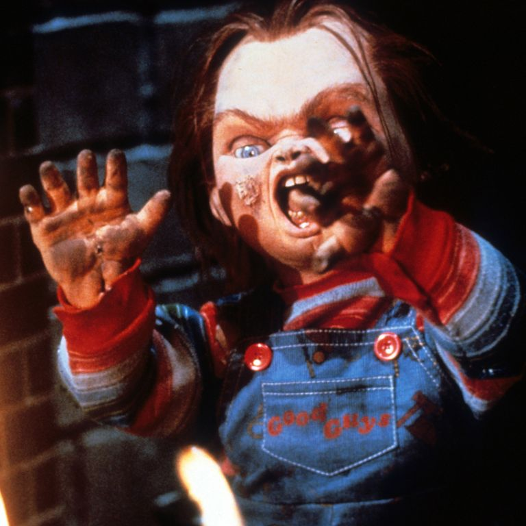
Imagine Toy Story, but without, well, all the things that give it Disney's stamp of approval. Instead of Woody and Buzz, this movie follows a young boy who receives a doll that takes on a demonic life of its own.
Halloweentown (1998)
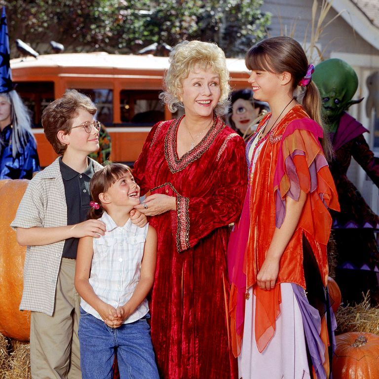
If your kids wish that Halloween could be every night of the year, you’re in luck: In the magical Halloweentown, that’s basically how it goes.
Nightmare on Elm Street (2010)
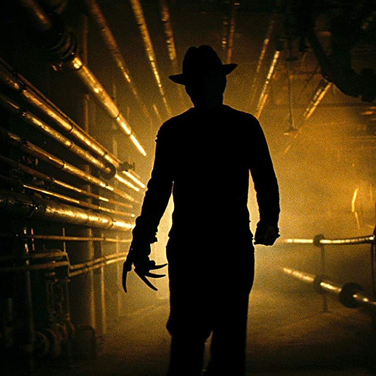
In Freddy Kruger’s world, nightmares can actually kill you. So, maybe sip on a glass of wine while you watch this modern remake of the 1984 thriller.
The Haunted Mansion (2003)
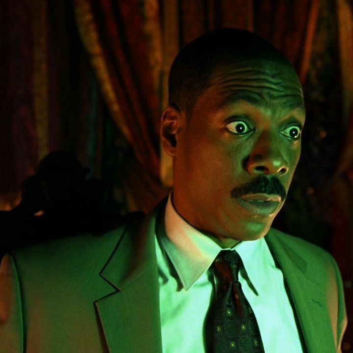
Disneyland built the house, but Eddie Murphy made the movie. By the end of this heart-warming Disney classic, you may just change your mind about those grim, grinning ghosts.
Corpse Bride (2005)
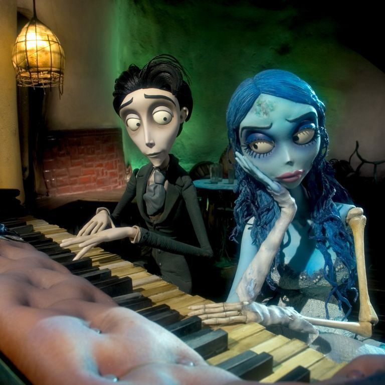
Just because Halloween is meant to celebrate thrills and chills doesn't mean you can't also indulge in a star-crossed romance, right? This animated Tim Burton love story is your best bet and, best of all, it's totally kid-friendly.
The Cabin in the Woods (2012)
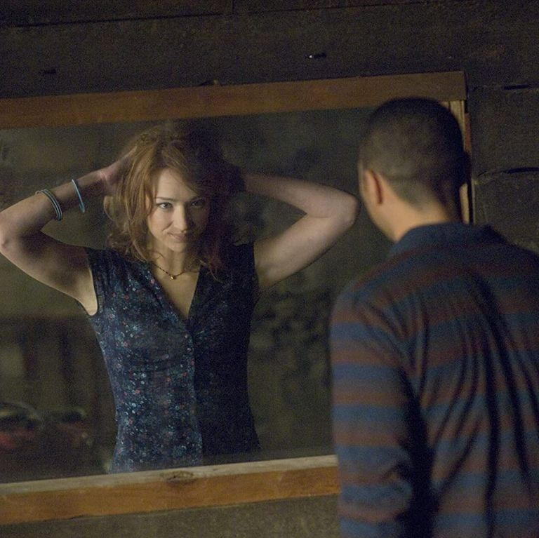
Both an entry within and a satire of the horror genre, this fascinating film features classic tropes—college students trapped in a cabin, zombies, werewolves, and evil rituals—but cleverly turns them each on their head.